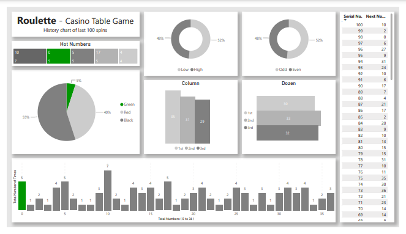

About
My previous work experience has helped me build problem solving, attention to detail and teamwork, which I can apply effectively in Data Analytics. To prepare for this career transition, I have developed practical knowledge of Excel, SQL, Python and Power Bi through course work, personal projects and self-learning. Now, I am seeking Entry Level Data Analyst opportunities where I can apply my analytical skills.Projects
Roulette - Casino Table Game
The dashboard transforms raw game data into interactive reports and visual insights, enabling users to identify trends, evaluate betting strategies and understand game probabilities through dynamic charts.

Hotel Management System
A comprehensive data driven system that helps hotel management make informed decisions, improve operational efficiency, maximize revenue and enhance customer satisfaction by turning raw data into actionable insights.

Student Management System
It focuses on analyzing educational data to improve student performance, administrative efficiency and institutional decision making. By collecting and processing student related data.

Experience
2026 - Present
Data Analyst
Las Vegas, Nevada, United States
As a Data Analyst, I turn raw data into meaningful insights using Excel, SQL, Python and Power Bi. I trive on curiosity, clean data and dashboards that tell a story making complex analytics simple and actionable. I enjoy making data accessible and meaningful for both technical and non-technical audiences.
2023 - 2026
Table Game Dealer
Las Vegas, Nevada, United States
Dealt games including Black Jack, Three Card Poker, Ultimate Texas Hold'em, Roulette and Electronic Craps. Maintained a positive guest experience through attentiv and friendly service. Assisted senior dealers in managing table games. Learned and applied casino rules, game mechanics and customer service protocol.
2005 - 2023
Computer Instructor
Surat, Gujarat, India
Teach computer fundamentals, programming and office applications to students of all levels. Provide one-on-one support to help students graps technical concepts. Supported lead instructors in delivering programming and software training. Assisted with lab sessions, grading and student queries. Helped design learning materials for beginner and intermediate courses.
Education
2002 - 2005
Bachelor of Arts
Surat, Gujarat, India
This degree program focused on the study of multiple languages, their literature and cultural contexts. It develops proficiency in reading, writing and communication across English, Hindi and Gujarati languages. Students gain a understanding of classical and modern texts, literary traditions and cross cultural perspectives, preparing them for careers in education, translation, communication, research and other language focused fields.
View Certificate2001 - 2002
Business Professional Programmer
Surat, Gujarat, India
A foundational IT certification course covering computer fundamentals and practical applications. The program includes PC Software, Information Technology, Business System and 'C' Programming Language equipping students with essential digital literacy, programming skills and an understanding of IT systems. Graduates develop the ability to work with software tools, solve problems and apply computational thinking in professional environments.
View Certificate2000 - 2001
Microsoft Certified Professional
Microsoft Certified System Engineer
Surat, Gujarat, India
The MCSE certification for Windows 2000 validates advanced expertise in designing, implementing and managing Microsoft Windows 2000 based networks and systems. It covers server configuration, network infrastructure, security and troubleshooting, equipping professional to plan, deploy and maintain IT solutions efficiently and securely.
View CertificateMicrosoft Certified Database Administrator
Surat, Gujarat, India
The MCDBA certification for SQL Server 2000 validates advanced expertise in designing, implementing and managing Microsoft SQL Server 2000 databases. It covers database installation, configuration, security, backup and recovery, performance tuning and query optimization.
View Certificate1999 - 2000
Diploma in Information System Management
Surat, Gujarat, India
A professional IT program focused on practical skills in information systems and business technology. The course covers MS Office, Visual Basic, HTML and Internet providing hands-on experience in office productivity, database management, application development and basic web development. Graduates gain the ability to create and manage databases, develop applications and design simple web pages, preparing them for roles in IT support, system management and technology driven business solutions.
View CertificateContact
I'd love to hear from you! Whether you have a project in mind, want to collaborate or just want to chat about data, feel free to reach out.Phone : +1 ( 702 ) 249 8887
E-Mail : m7022498887@gmail.com
What's App : +1 ( 702 ) 249 8887